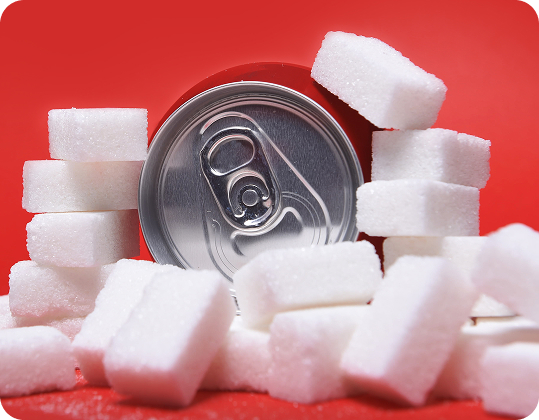

Le critiche
sulla salute
Troppo zucchero
Coca-Cola.
Le principali preoccupazioni legate al consumo di prodotti di Coca-Cola riguarda una particolare attenzione agli effetti delle bevande zuccherate su obesità, diabete e salute pubblica, e al dibattito scientifico e sociale che ne deriva.
Impatto delle bevande zuccherate.
Negli ultimi anni, numerosi studi scientifici hanno evidenziato come il consumo eccessivo di bevande zuccherate rappresenti un importante fattore di rischio per la salute. Secondo istituzioni come la Organizzazione Mondiale della Sanità e riviste scientifiche come The Lancet, l’assunzione regolare di zuccheri semplici è collegata allo sviluppo di diverse malattie croniche non trasmissibili Anche abitudini quotidiane apparentemente innocue, se protratte nel tempo, possono avere effetti significativi sull’organismo.
Tra le conseguenze più rilevanti emerge il rischio di sviluppare Diabete di Tipo 2, legato ai frequenti picchi glicemici causati dalle bevande zuccherate. Come evidenziato dalla Harvard T.H. Chan School of Public Health, questi sbalzi possono portare nel tempo alla resistenza all’insulina, uno dei principali meccanismi alla base della malattia. Parallelamente, queste bevande contribuiscono all’aumento di Obesità e sindrome metabolica, poiché forniscono “calorie vuote” che favoriscono l’accumulo di grasso senza apportare benefici nutrizionali, aumentando anche il rischio cardiovascolare.
Effetti sul nostro corpo.
Il consumo eccessivo di zuccheri può avere effetti negativi su diversi organi. Il fegato, ad esempio, può sviluppare steatosi epatica non alcolica a causa dell’eccesso di fruttosio. Le bevande zuccherate favoriscono carie ed erosione dello smalto dentale, mentre alcune ricerche collegano gli zuccheri anche a un maggiore rischio di osteoporosi.
Gli effetti non riguardano solo il corpo, ma anche la salute mentale: diversi studi hanno evidenziato un legame tra consumo eccessivo di zuccheri, disturbi dell’umore, ansia e depressione, soprattutto nei giovani. Questo mostra quanto l’alimentazione influenzi il benessere generale.

Rischi a lungo termine.
Diversi studi indicano una correlazione tra il consumo frequente di bevande zuccherate e patologie come Malattie renali croniche e calcoli renali. Nel complesso, le evidenze scientifiche non mirano a creare allarmismo, ma a promuovere una maggiore consapevolezza. Comprendere questi rischi è fondamentale per adottare abitudini più equilibrate nel tempo.
In risposta a queste preoccupazioni, molte organizzazioni sanitarie e governi hanno iniziato a implementare politiche volte a ridurre il consumo di bevande zuccherate, come tasse sui prodotti zuccherati, campagne di sensibilizzazione e regolamentazioni sulla pubblicità, evidenziando l’importanza di un approccio alla prevenzione delle malattie legate all’alimentazione.